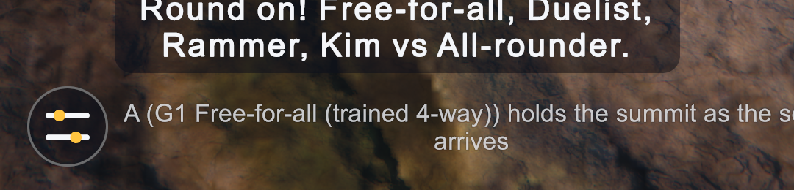
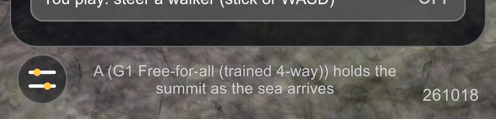
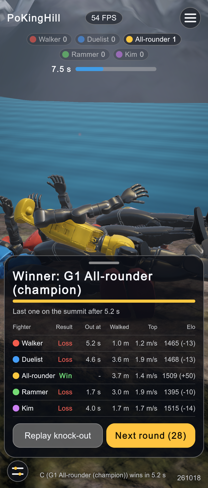
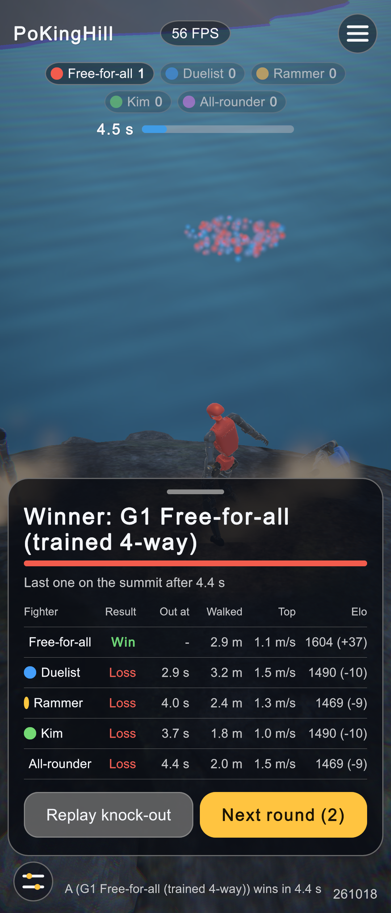
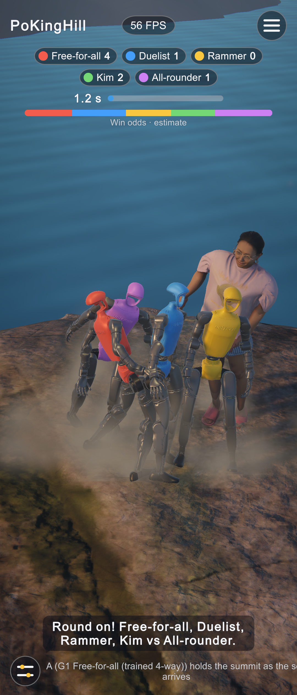
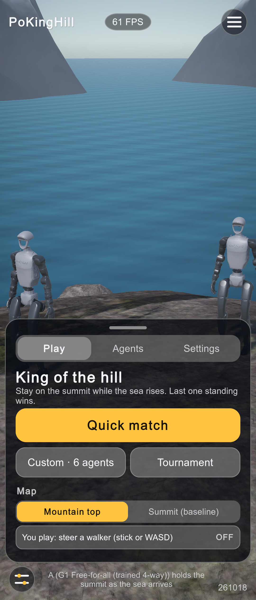

HUD fixes, 261018
Found during the day-2 five-way play check (Free-for-all, Duelist, Rammer, Kim, All-rounder; game rules, 8 rounds).
1. Status line ran off the screen and pushed the build version away
.status in UI/Hud.uss grew with its text. A long line ("A (G1 Free-for-all (trained 4-way)) holds the summit as the sea arrives") overflowed the right edge and pushed the YYMMDD version out of the bottom bar. Fix: flex-shrink: 1; flex-basis: 0; min-width: 0; overflow: hidden, so the line takes only the space between the settings button and the version and wraps.


2. Results sheet colour dots shrank
On the five-row results sheet the per-fighter colour dots were squeezed by long names. Fix: .dot { flex-shrink: 0; } (committed earlier today, 4a22882). After:



